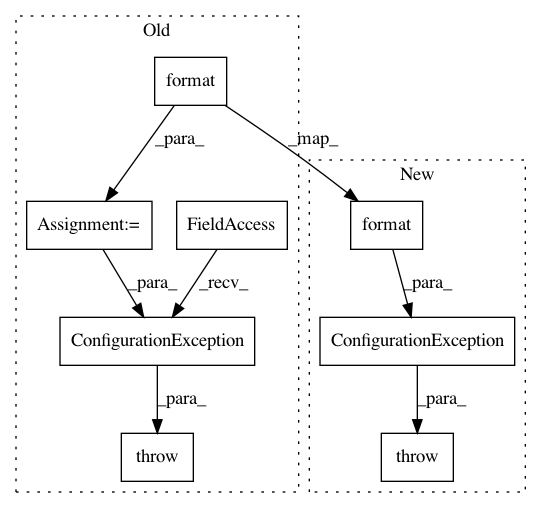

a4b599eb3f9d11bbba417c7e80856d6b66414c80,spynnaker/pyNN/models/common/neuron_recorder.py,NeuronRecorder,set_recording,#NeuronRecorder#Any#Any#Any#Any#,353
Before Change
else:
self._turn_off_recording(variable, sampling_interval, indexes)
else:
msg = "Variable {} is not supported ".format(variable)
raise fec_excceptions.ConfigurationException(msg)
def get_buffered_sdram_per_record(self, variable, vertex_slice):
Returns the sdram used per record
After Change
else:
self._turn_off_recording(variable, sampling_interval, indexes)
else:
raise ConfigurationException("Variable {} is not supported".format(
variable))
def get_buffered_sdram_per_record(self, variable, vertex_slice):
Returns the sdram used per record
In pattern: SUPERPATTERN
Frequency: 3
Non-data size: 8
Instances
Project Name: SpiNNakerManchester/sPyNNaker
Commit Name: a4b599eb3f9d11bbba417c7e80856d6b66414c80
Time: 2018-03-12
Author: donal.k.fellows@manchester.ac.uk
File Name: spynnaker/pyNN/models/common/neuron_recorder.py
Class Name: NeuronRecorder
Method Name: set_recording
Project Name: SpiNNakerManchester/sPyNNaker
Commit Name: 2783e8e550acd33cb62397f105e655a74794a758
Time: 2017-12-14
Author: donal.k.fellows@manchester.ac.uk
File Name: spynnaker/pyNN/models/common/neuron_recorder.py
Class Name: NeuronRecorder
Method Name: set_recording
Project Name: SpiNNakerManchester/sPyNNaker
Commit Name: 2783e8e550acd33cb62397f105e655a74794a758
Time: 2017-12-14
Author: donal.k.fellows@manchester.ac.uk
File Name: spynnaker/pyNN/models/common/neuron_recorder.py
Class Name: NeuronRecorder
Method Name: is_recording